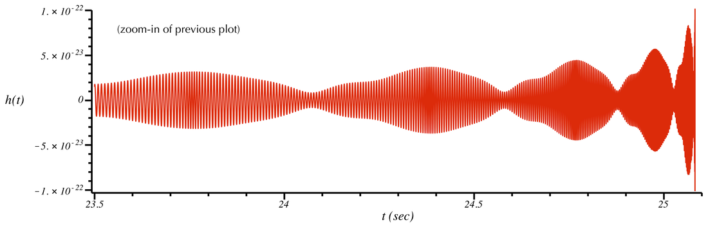

Precession in GWs

With binary black hole (BBH) mergers accounting for a large proportion of the events observed by the LVK network, BBH dynamics have received a lot of attention in recent years. Spin precession is a key factor in such dynamics. Spins for stellar mass black holes largely depend on different astrophysical channels that result in the formation of BBH systems. With misalignment of spins with respect to the orbital angular momentum, the orbit of the binary precesses and nutates around the total angular momentum in certain conditions. Such spin dynamics (and also translational precession, spin-orbit resonances, nutation cycles, etc.) leave imprints on the emitted GWs, evident from modulations in the polarization, phase, and amplitude of the GW signals. So, GW signals provide an insight into various astrophysical properties of the system they originate from - Masses and spins of the compact objects, orbital properties, distance to the binary, sky location, etc.
Soon to be updated. Thank you for your patience.